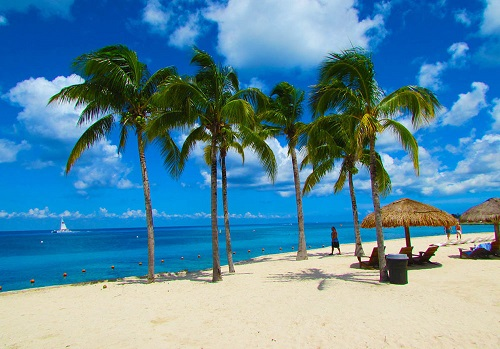
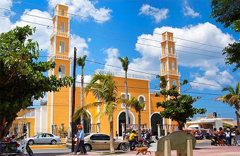
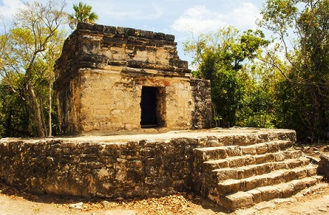

Tours
Explore Cozumel with Scoots
Here are some possible sites to visit
Cozumel Beaches
Among the most popular and attractive of Cozumel's beaches are Playa San Juan and Playa Santa Pilar in the northwest corner of the island, and Playa San Francisco, Playa Santa Rosa, and Playa Palancar to the southwest.
Of note on the east side, which opens to the Caribbean Sea, are Playa Encantada, Playa Hanan, Punta Morena, Playa Chen Río, and Playa Chiqueros. Also worth a visit are Playa Mia Grand Beach Park, a popular spot for snorkeling due to its easy access to the coral reefs at El Cielo.
San Miguel
On the northwest side of Cozumel, San Miguel de Cozumel is the island's capital and offers many interesting distractions. The town also boasts a major international airport.
Another highlight is the interesting Island Museum (Museo de la Isla) with its many exhibits dealing with local geography, history, and the abundant marine life.
San Gervasio
The most important Mayan site on Cozumel, San Gervasio, built in AD 800 and located 16 kilometers from San Miguel de Cozumel.
Highlights of a visit include seeing the Temple of Ix-chel, for centuries the focal point of the island's religious life and a place of pilgrimage from across the Mayan empire.